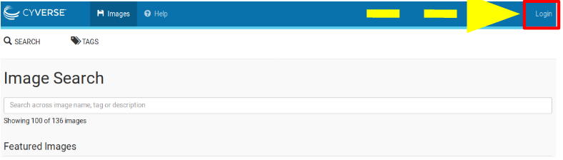
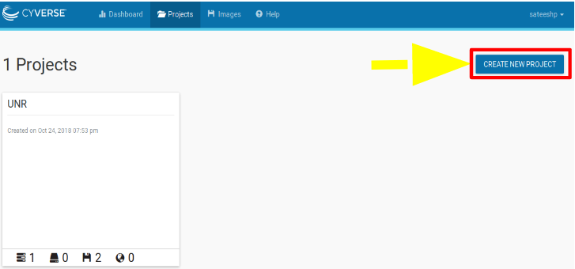
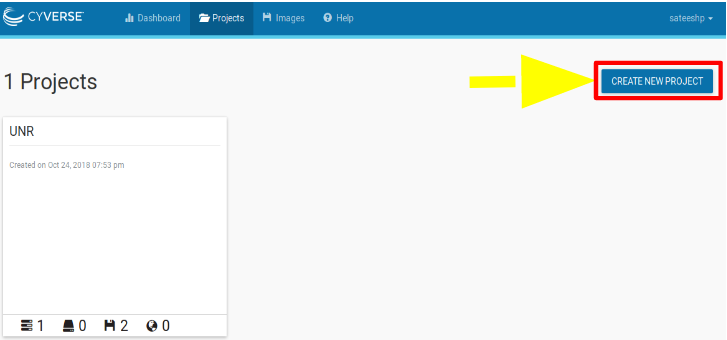
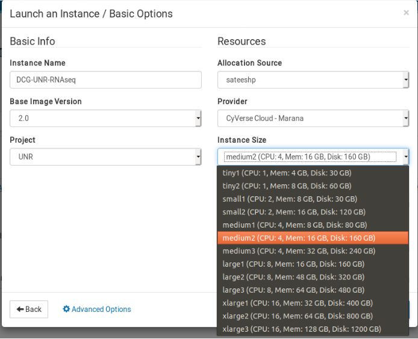
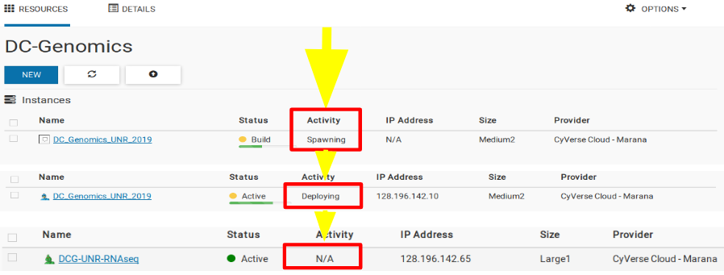
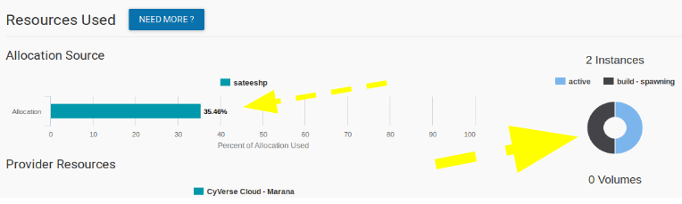
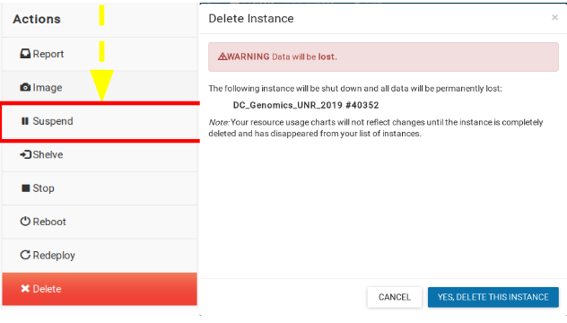
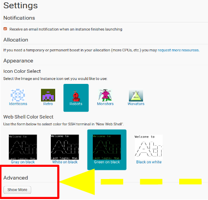
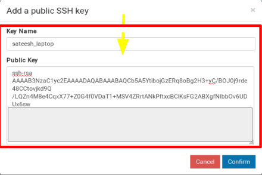
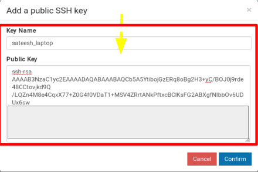

4. Logging onto Atmosphere Cloud¶
5. Setup¶
- For the duration of this workshop, we will be accessing data and tools required to analyze our data on a remote computer using the CyVerse’s Atmosphere cloud.

- Atmosphere, CyVerse’s cloud-computing platform allows you to launch your own isolated virtual machine (VM) image and software, using compute resources such as CyVerse-provided software suites, and pre-configured, frequently used analysis routines, relevant algorithms, and datasets.
Before you can begin using Atmosphere, you must have a CyVerse account and be granted access to Atmosphere
Request access to Atmosphere here
- This is the first and last place in these lessons where it will matter if you are using PC, Mac, or Linux. After we connect to our virtual machines built using the same image; we will all be on the same operating system/computing environment.
- Cyverse documentation on how to use Atmosphere resources can be found here
5.1. Windows UNIX Terminal Setup¶
- Windows-users will need to install UNIX-ready terminal.
- Download & Install mobaxterm home edition

- Start a new session; Fill in your “remote host” the IP address of your virtual machine. Then select “specify username” and enter your cyverse username; Click OK.
6. Login & Launch Instance¶
- Login to Atmosphere by clicking the “login” butoon (right-upper corner).

- Fill in your CyVerse username and password and click “LOGIN”

- Select the “Projects” tab and then click the “CREATE NEW PROJECT” button
 

- Give your Project folder a name (Description is optional). Then click “CREATE”.

- Click on your newly created project.
- Click “NEW” and then “Instance” from the dropdown menu to start up a new virtual machine.

- To select an image click on “Show All” tab and Search for “DCG-UNR-RNAseq” and choose the “DCG-UNR-RNAseq” image created by ‘sateeshp’.

- Basic options
- Instance Name: e.x., “workshop” or you can leave it default which is the image name.
- Base Image Version: “2.0”
- Project: select project folder to host the instance
- Allocation Source: should be your cyverse account
- Provider: “CyVerse Cloud - Marana”
- Instance size: Depending on your allocations, choose most suitable one.
- Recommended for this workshop: “medium2 (CPU: 4, Mem: 16GB, Disk: 160GB)”

- Launch instance and wait for the build to be deployed.
- The virtual machine should now be booting up! and should take ~ 5-10 minutes. Note: During the build process..Be patient! Don’t reload or do anything. Once the virtual machine is ready, the “Activity” column will show “N/A” and the “Status” column will turn green and “Active” (see below)

- Navigate back to ‘Projects’ and click on your new instance’s name to see more information related to the instance you just created!
- Copy the IP address of your instance.

7. SSH Secure-Login¶
- MACOS & LINUX users can open a Terminal window and Windows users start a new session in mobaxterm (see # Setup)
- Establish a secure-login to the instance by typing the following:
ssh your_cyverseusername@ip_address
- This should log you into CyVerse and you should see a screen like this:

- Enter ‘yes’ and then you will be asked for your CyVerse password.
- Successful login should look something like below

To close your current session and end SSH connection, type ‘exit’

8. Instance Maintenance¶
8.1. Atmosphere Dashboard¶

8.2. Delete Instance¶
- To completely remove your instance, you can select the “Delete” button from the instance details page.
- This will open up a dialogue window. Select the “Yes, delete this instance” button.
- It may take Atmosphere a few minutes to process your request. The instance should disappear from the project when it has been successfully deleted.

8.3. Suspend Instance¶

Note: It is advisable to delete the machine if you are not planning to use it in future to save valuable resources. However if you want to use it in future, you can suspend it. Notice: IP address changes
8.4. Request More AUs¶

9. Additional Features¶


9.3. Custom Images¶
9.4. Deposit rsa-key¶
- Concerning Keys: Cryptographic keys are a convenient and secure way to authenticate without having to use passwords. They consist of a pair of files called the public and private keys: the public part can be shared with whoever you’d like to authenticate with (in our case, CyVerse Atmosphere!), and the private part is kept “secret” on your machine. Things that are encrypted with the public key can be be decrypted with the private key, but it is computationally intractable (ie, it would take on the order of thousands of years) to determine a private key from a public key. You can read more about it here
- Create the RSA Key Pair on your laptop/computer:
$ ssh-keygen -t rsa
- Store the Keys and Passphrase. Once you have entered the Gen Key command, you will get a few more questions:
$ Enter file in which to save the key (/home/demo/.ssh/id_rsa):
- You can press enter here, saving the file to the user home (in this case, my example user is called demo).
$ Enter passphrase (empty for no passphrase):
- It’s up to you whether you want to use a passphrase though we recommend NOT to!.
- The public key is now located in /home/demo/.ssh/id_rsa.pub. The private key (identification) is now located in /home/demo/.ssh/id_rsa
- Copy the Public Key
- Once the key pair is generated, it’s time to place the public key on the server that we want to use.
$ cat ~/.ssh/id_rsa.pub
- Copy all of the text that constitutes your public key and we will place it in our Atmosphere accounts.

 

- Deposit key on Atmosphere
- You are now ready to deposit your generated public key onto your Atmosphere account, to gain secure login each time you build and use an instance on Atmosphere.
- Click on your username on the Atmosphere page and navigate to ‘Settings’ page

- Scroll down to the advanced section and click on ‘Show More’
- In the ‘SSH Configuration’ section, click on the ‘+’ sign
- Paste your public key generated earlier and give this key a name
- You can now securely login to all the instances you launch on Atmosphere without having to type your password each-time you ssh login.